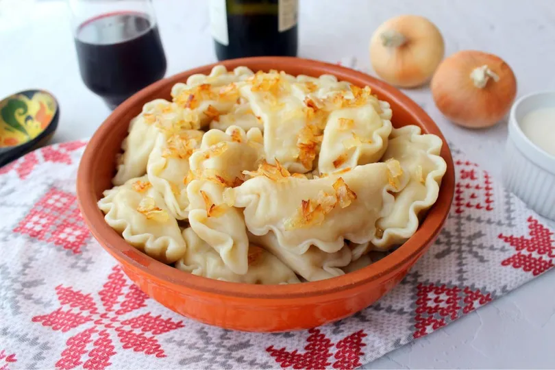
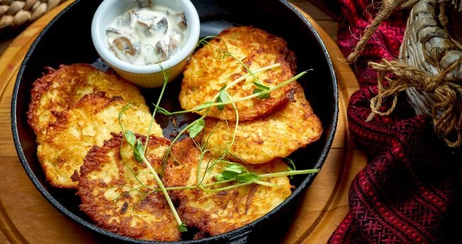

Borsch - Sopa tradicional ucraniana

El borsch es una sopa emblemática de Ucrania elaborada con remolacha, verduras y carne. Su color intenso y sabor profundo la convierten en una joya de la gastronomía eslava.
Tiempo de elaboración:
Preparación: 20 min | Cocción: 60 min | Total: 1 h 20 min
Ingredientes:
- 500 g de remolacha
- 300 g de carne de res (opcional)
- 1 cebolla grande
- 2 zanahorias
- 3 patatas medianas
- 1/4 repollo
- 2 cucharadas de pasta de tomate
- 1 diente de ajo
- Sal, pimienta y hojas de laurel al gusto
- Eneldo y crema agria para servir
Instrucciones:
- Cocina la carne en agua con sal y laurel durante unos 45 minutos para obtener un caldo base.
- En una sartén aparte, sofríe la cebolla, zanahoria y remolacha rallada con un poco de aceite y pasta de tomate.
- Añade las verduras salteadas al caldo junto con las patatas y el repollo.
- Hierve 20 minutos más hasta que las verduras estén tiernas.
- Sirve caliente con crema agria y un poco de eneldo fresco.
Información nutricional (por porción):
| Calorías | Proteínas | Grasas | Carbohidratos |
|---|
| 250 kcal | 12 g | 8 g | 30 g |
Varenyky - Empanadillas rellenas

Los varenyky son pequeñas empanadillas hervidas rellenas de patata, requesón o cerezas. Se sirven con mantequilla derretida o crema agria.
Tiempo de elaboración:
Preparación: 40 min | Cocción: 15 min | Total: 55 min
Ingredientes:
- 300 g de harina
- 150 ml de agua tibia
- 1 huevo
- 1 pizca de sal
- 200 g de puré de patata o requesón (para el relleno)
- Mantequilla o crema agria para servir
Instrucciones:
- Mezcla la harina con sal, huevo y agua hasta obtener una masa elástica.
- Extiende la masa con un rodillo y corta círculos con un vaso.
- Coloca una cucharadita de relleno en cada círculo y ciérralos en forma de media luna.
- Hierve los varenyky en agua con sal durante unos 5 minutos, hasta que floten.
- Sirve calientes con mantequilla derretida o crema agria.
Información nutricional (por 5 unidades):
| Calorías | Proteínas | Grasas | Carbohidratos |
|---|
| 320 kcal | 9 g | 6 g | 55 g |
Deruny - Tortitas de patata

Los deruny son tortitas de patata rallada, crujientes por fuera y suaves por dentro. Son un plato típico del desayuno o la cena en muchas regiones de Ucrania.
Tiempo de elaboración:
Preparación: 15 min | Cocción: 20 min | Total: 35 min
Ingredientes:
- 500 g de patatas
- 1 cebolla pequeña
- 1 huevo
- 2 cucharadas de harina
- Sal y pimienta al gusto
- Aceite para freír
Instrucciones:
- Ralla las patatas y la cebolla. Escurre el exceso de líquido.
- Agrega huevo, harina, sal y pimienta, mezclando bien.
- Calienta aceite en una sartén y vierte cucharadas de la mezcla.
- Fríe los deruny hasta que estén dorados por ambos lados.
- Sírvelos calientes con crema agria o salsa de ajo.
Información nutricional (por porción):
| Calorías | Proteínas | Grasas | Carbohidratos |
|---|
| 280 kcal | 6 g | 10 g | 40 g |